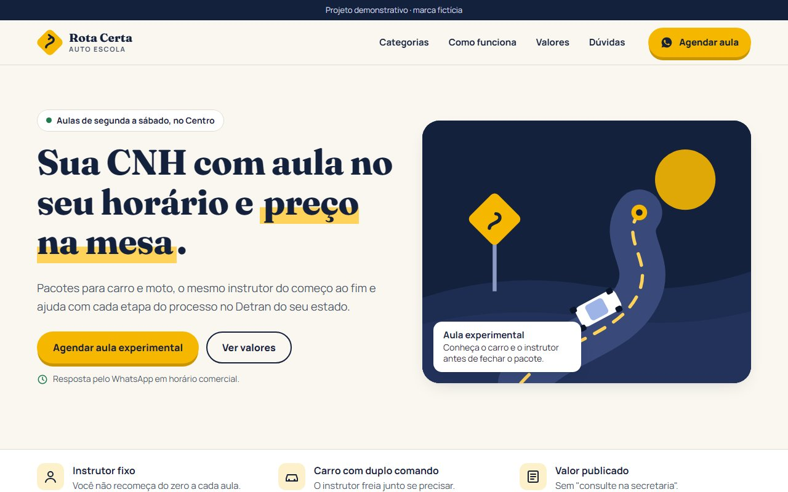
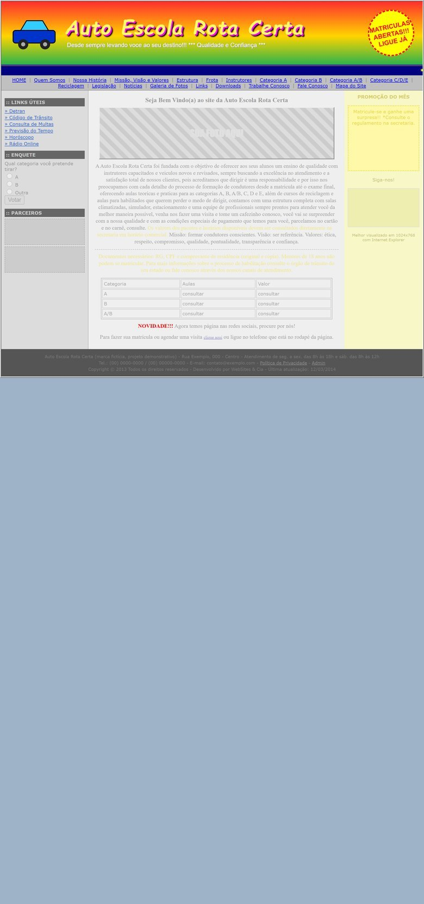
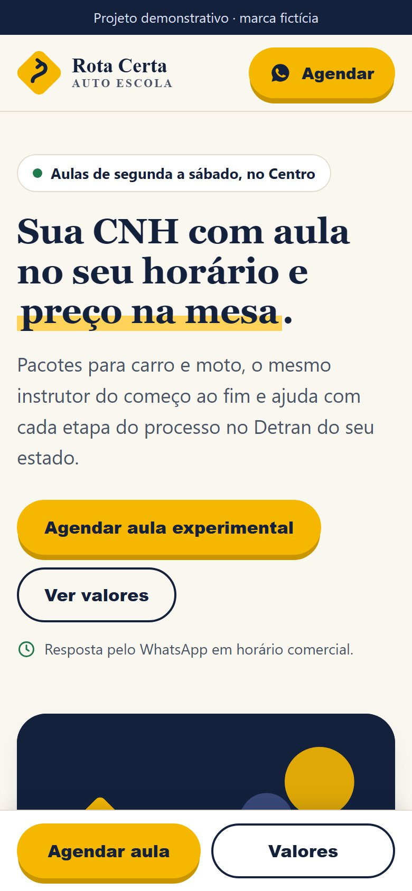

Projeto demonstrativo · marca fictícia
Auto Escola Rota Certa: de um site de 2013 a uma página que agenda aula
O site antigo tinha tudo e não dizia nada: vinte links no menu, preço "a consultar" e o botão de matrícula escondido no rodapé. Refiz a página do diagnóstico ao protótipo, pensando primeiro em quem chega pelo celular.

AntesDepois01 · Diagnóstico
Seis problemas que afastavam o aluno
Antes de desenhar qualquer coisa, marquei no print do site antigo o que atrapalha quem quer uma resposta rápida: quanto custa, como funciona e como falar com a autoescola.
- Menu entulhado20 links com o mesmo peso, de "Missão, Visão e Valores" a "Mapa do Site". O que importa (categorias e preço) se perde no meio.Depois: 4 itens e um botão de agendar sempre à vista.
- Sem hierarquiaO topo grita com degradê e selo piscando, o título real é cinza e pequeno, e o banner diz "sua foto aqui". Nada responde "o que eu ganho".Depois: uma promessa clara em título grande, com subtítulo e ação logo abaixo.
- Texto corridoUm parágrafo de 200 palavras, centralizado, misturando história, estrutura, pagamento e missão. Ninguém lê.Depois: blocos curtos, listas com marcadores e um FAQ.
- Contraste ruimAmarelo claro sobre cinza (1,1:1) justo na frase dos valores e dos documentos. O cinza do texto principal fica em 2,2:1.Depois: todo texto passa de 4,5:1 (AA); o corpo fica em 14,5:1.
- CTA escondidoA matrícula depende de um "clique aqui" de 10 px no fim da página, ou de achar o telefone no rodapé.Depois: botão amarelo no topo, em cada pacote e numa barra fixa no celular.
- Quebra no celularTabela com largura fixa de 1000 px e sem meta viewport: no celular a página encolhe e vira letra miúda.Depois: pensado a partir de 360 px, com alvos de toque de 48 px ou mais.
02 · Processo
Do rabisco ao protótipo, em cinco etapas
- Pesquisa rápida
- Arquitetura de informação
- Wireframe
- Guia visual
- Protótipo
Etapa 1Pesquisa rápida
Num projeto real, converso com 3 a 5 alunos e com a secretaria, e leio as avaliações públicas da escola. Neste caso demonstrativo, parti das perguntas que qualquer pessoa faz antes de escolher uma autoescola.
- "Quanto custa?"Antes: "consultar". Virou o primeiro bloco depois do topo.
- "Tem horário pra mim?"Dias e horas no topo e no contato.
- "Como funciona o processo?"Quatro passos numerados, sem juridiquês.
- "Como eu falo com vocês?"WhatsApp em um toque, de qualquer ponto da página.
Etapa 2Arquitetura de informação
Juntei os 20 links em quatro grupos que respondem às perguntas acima. "Nossa História", "Missão" e "Galeria" saíram do menu; "Links úteis", enquete e previsão do tempo saíram do site.
Quem Somos · Nossa História · Missão, Visão e Valores · Estrutura · Frota · Instrutores · Legislação · Notícias · Galeria · Links · Downloads · Trabalhe Conosco · Mapa do Site 13 itens viraram rodapé ou saíram
Etapa 3Wireframe em baixa fidelidade
Caixas cinza, sem cor nem foto, para decidir a ordem antes da aparência. O celular vem primeiro: o que não cabe ali não é prioridade.
Etapa 4Guia visual
Amarelo de placa de trânsito e azul-noite: lembra estrada sem cair no clichê do carro vermelho. Um serifado com personalidade nos títulos e uma sem serifa legível no texto. Cada par de cor foi medido.
#14213D15,0:1 no papel#F5B7008,9:1 com noite#FAF7F0fundo#4A54687,1:1 no papel#1F7A4D5,0:1 no papelFraunces títulos
Manrope texto, botões, rótulos
Botão principalUm por tela, sempre amarelo, 52 px de altura.
Foco visívelContorno escuro com halo amarelo para quem navega no teclado.
Alvo de toqueNada clicável abaixo de 48 × 48 px.
03 · No celular
O mesmo site, na mão do aluno
Muita gente procura serviço do bairro direto no celular. À esquerda, o site antigo encolhido para caber na tela. À direita, o redesign.


Veja as duas versões inteiras
Abra o antes no celular e depois o redesign. A diferença aparece em cinco segundos.